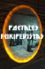

Categoría:Biología
De:
La Frikipedia
, la enciclopedia
extremadamente
seria.
Índice:
principio
A
B
C
D
E
F
G
H
I
J
K
L
M
N
Ñ
O
P
Q
R
S
T
U
V
W
X
Y
Z

Esta categoría tiene su propio
Portal
Autor(es):
Nexo
Khazike Khashondo
Veni Vidi Vici
Frikipedia 2005-2016, Licencia
GFDL 1.2
- Extraído por FrikiLeaks
 De: La Frikipedia, la enciclopedia extremadamente seria. De: La Frikipedia, la enciclopedia extremadamente seria.
De: La Frikipedia, la enciclopedia extremadamente seria. De: La Frikipedia, la enciclopedia extremadamente seria.